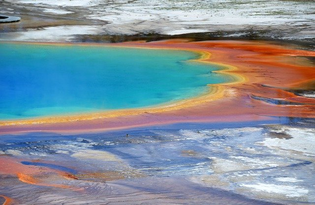

I am taking this class to learn the basics of web design such as creating a website in different ways.
HTLM is the current coding language that I am currently using at is it considered the back bone
of the web.
I like learning new things and i think coding is an excellent skill to have.
Currently I am in Boise because I am doing a semester of exchange at BSU. The following link will show some of the things to do in Boise.
Click here to watch the video
When scrolling through my website you can click here to listen to some music:
I really hope to get to try river rafting here in Boise even though I am not here during summer!
I want to go travel to some of the national parks. Maybe Yellow Stone National Park which looks very beautiful

Another thing i want to try is to river raft with Cascade Raft and Kayak
and their website can be found through the link below:
Here